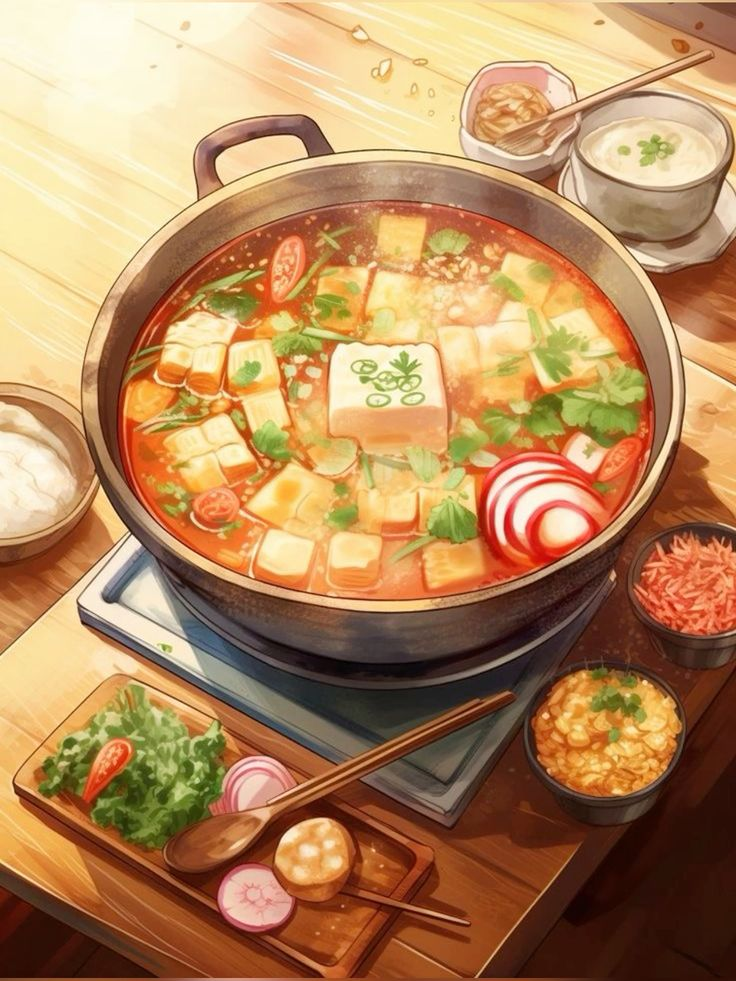

Credit: Pintrest
Jujutsu Kaisen is one of those shows where most characters over-estimate just how powerful they are. This mostly leads to a rude awakening where they are humbled and humiliated by superior power. This phenomenon has inspired this page. Featuring Itadori Yuuji's famous meatballs and great love for the show, the translated version is hereby written below: This recipe is for meatballs used in hotpot. Use with caution.